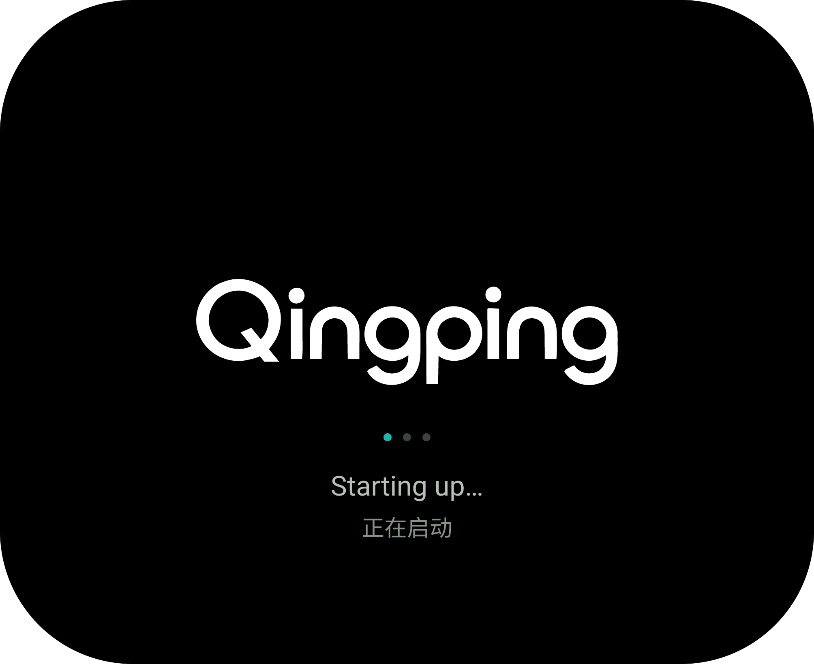
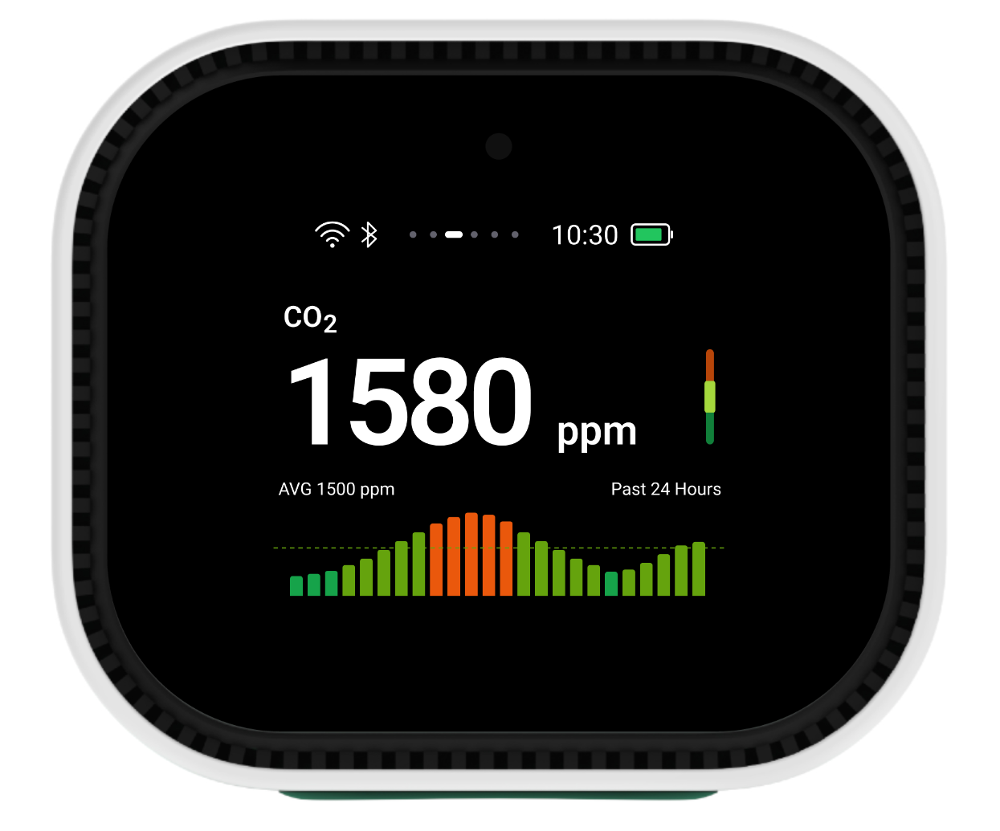
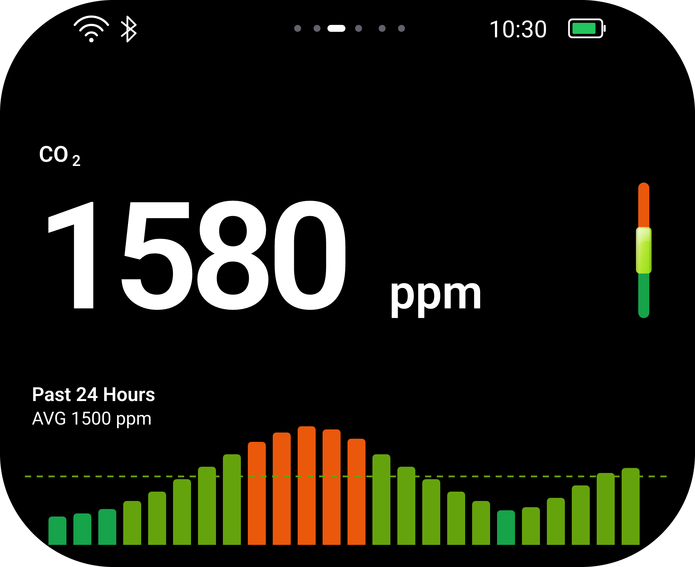
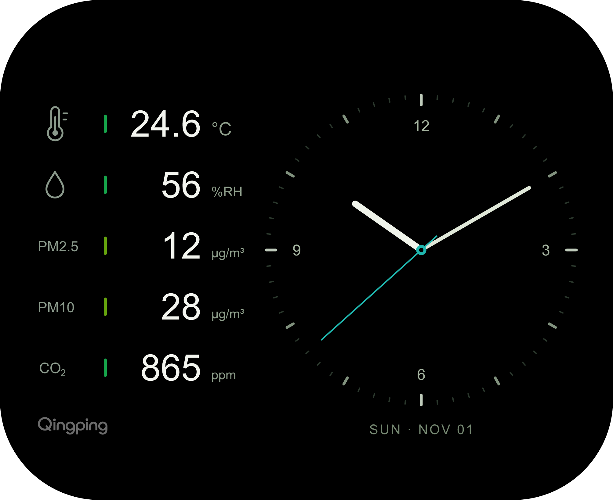
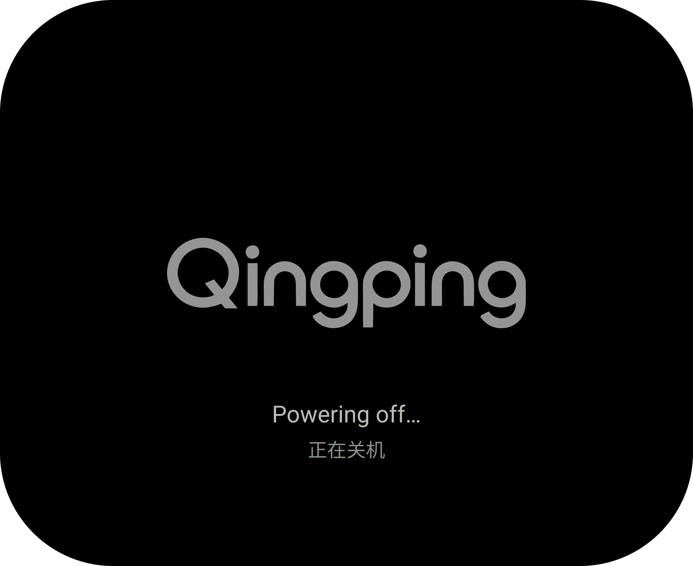

空气检测仪 · 界面设计说明
看见空气，
读懂每一次变化。
从温度、湿度、CO₂ 与颗粒物监测，
到 Qingping 与 Matter 设备添加。六个页面，用统一的视觉语言连接日常查看与初次配置。

CO₂ 正视效果 · 1580 ppm 为示例读数
502 × 410原生像素分辨率
1.96″ AMOLED圆角矩形显示屏
41 × 33 mm屏幕可视区域
6 套界面4 个监测页面 · 2 个配置页面
01 / 界面设计同一种秩序，
同一种秩序，
不同的环境信息。
读数始终优先，颜色表达等级。监测页面保留各指标自己的单位、分档和趋势；配置页面清晰区分 App 下载与设备配对。


CO₂03 / 06
手指 / 鼠标拖动 · 键盘 ← → · 点击页面标签
支持手指与鼠标拖动、屏幕内方向键、六页循环及屏保唤醒。查看动效参数与技术实现 ↓
01 / 当前读数
先读数字，再读状态。
白色大读数位于视觉中心，小标题和单位清楚交代测量对象。右侧评级栏靠下对齐，保持安静的阅读节奏。
02 / 历史趋势
让变化拥有参照。
单参数页面采用单柱与一条平均线；颗粒物页面使用成对双柱、两条平均线，顺序固定为 PM2.5 在左、PM10 在右。
03 / 统一细节
保留一致，区分含义。
六套页面共用连接图标、分页位置和绿色电池；监测页表达读数与等级，Qingping 与 Matter 页分别引导设备添加。
02 / 交互动效与实现跟随手势，
跟随手势，
平顺切换。
按下面四项实现即可。上方屏幕可直接操作，完整网页逻辑见 motion.js ↓。
01 各元素怎样动
| 元素 | 滑出 → 滑入 | 实现要点 |
|---|---|---|
| 状态栏 | 固定不动；分页胶囊跟随切换 | 独立于滑动内容层 |
| 标题、数值和单位 | 整体横移；数值与单位淡出 → 淡入 | 标题不淡化，文字不缩放 |
| 柱形图与平均线 | 向底部收起 → 从底部展开 | 底部基线 y = 394 px；趋势文字不缩放，仅轻微淡化 |
| 评级栏 | 收窄并淡去 → 展宽并显现 | 宽度 100% ↔ 80%，高度不变；围绕 x = 465 px 缩放 |
| 评级玻璃高光 | 先淡去 → 稍晚显现 | 滑入进度超过 25% 后显现；高亮段不跨等级移动 |
| Qingping / Matter 页 | 整页横向移动 | 二维码不缩放、不做收展 |
02 滑动与时长
- 原生坐标为 502 × 410 px；相邻页面间距 18 px，翻一页的位移为 520 px。网页显示缩放后，手势位移需换算回原生坐标。
- 拖动超过 5 px 后锁定方向，纵向手势保留网页滚动。横向位移超过 110 px 即翻页；或速度超过 0.45 px/ms 且位移超过 12 px 时翻页，否则回位。停住超过 100 ms 再松手，不使用旧速度。
- 手指拖动：直接跟手。松手吸附 220–300 ms，时长 = 220 + 80 × min(1, 剩余距离 / 520)，曲线 cubic-bezier(0.22, 0.78, 0.30, 1)。
- 按钮、标签和键盘：切换时长 800 ms，曲线 cubic-bezier(0.40, 0, 0.20, 1)，方便在网页里看清动效。
03 每帧统一计算
每帧只更新一次横向位移 x，其余效果全部由它计算。这样拖到一半反向时，各元素会自然恢复。仅需绘制上一页、当前页和下一页；k 分别为 −1、0、1。
clamp(t) = min(1, max(0, t)) S(t) = t × t × (3 − 2 × t) pageX = k × 520 + x q = 1 − clamp(abs(pageX) / 520) // 0：外侧，1：完全落位 数值透明度 = S(q) 评级栏透明度 = S(q) 评级栏宽度比例 = 0.8 + 0.2 × S(q) 高光透明度 = S(clamp((q − 0.25) / 0.75)) r = S(clamp((q − 0.08) / 0.92)) 图表高度比例 = r 图表透明度 = min(1, 5 × r) 趋势文字透明度 = 0.5 + 0.5 × q
网页用透明 PNG 分层，图表围绕底部缩放；设备端可直接按 r 重绘柱高和平均线高度，保持柱宽、圆角、线宽与虚线节距不变。分页胶囊的伸缩及最多 8 px 的图表横向跟随，直接参考 motion.js 中的 indicator() 和 paint()。
04 状态处理与验收
- 状态：待机 → 拖动 → 吸附 → 待机。触摸取消或捕获丢失时回位；吸附期间忽略新输入。翻页成功后才更新当前页、标签和右侧介绍。
- 循环与屏保：六页首尾循环，分页胶囊在两端淡化交接。进入屏保淡入 450 ms；滑动唤醒返回原页面，按钮返回用 800 ms。
- 检查四种操作：慢拖、快扫、半途反向、未达阈值回位。确保动作连续，落位后与静态定稿一致，评级栏和高光贴合，PM 双柱及两条平均线同步收展。
- 适配：手机和桌面均可操作；系统开启“减少动态效果”时直接切换。设备端帧率与触摸手感以真机验证为准。
03 / 产品效果六套界面与开关机，
六套界面与开关机，
两种观看角度。
六套日常界面与开机、关机状态，均提供正视与斜视效果。保持屏幕可视区比例，斜视图进行透视贴合，屏幕与面板延续一体黑效果。
正视效果
点击图片放大 · PNG 原图可下载斜视效果
依据 Dany 2-2 产品图合成以上为产品照片与 UI 合成的设计效果，非实机屏显拍摄。监测数据及 Matter 配对信息均为示例；Qingping 页的两个二维码是 App 下载链接。
04 / 品牌与系统状态从开启到结束，
从开启到结束，
始终保持品牌的清晰。
开机与关机页面均使用青萍品牌站的正式白色 Wordmark，保持原有字形与比例，字标位于屏幕几何中心。



两张为静态状态设计帧，独立于六个日常页面。Favicon 与 Wordmark 素材取自 青萍正式品牌规范 ↗。
05 / 细节语言需要注意的地方，
需要注意的地方，
自然浮现。
一体色带，玻璃高亮。
评级栏保持连续轮廓与清晰分段。当前等级适度放大，以明亮玻璃反光突出；其余色段保持平整，不增加阴影、指针或评级文字。
轻巧而完整的状态栏。
Wi-Fi 采用完整的三层弧线与圆点，与蓝牙保持一致视觉高度。当前页以白色短胶囊突出，其余页面为低亮度圆点。
分页位置6 个位置，六套页面已完成
电池状态绿色填充，不显示百分比
显示基础纯黑底色，清晰白字
圆角适配内容位于屏幕可视区内
06 / 设计交付
下载全部 PNG 资源 ↓ ZIP所有页面，随时取用。
六个日常页面与两张开关机状态页的原尺寸、4 倍高清 PNG，以及对应透明切图。
本说明页可离线浏览，图片与下载资源均已随包保存。